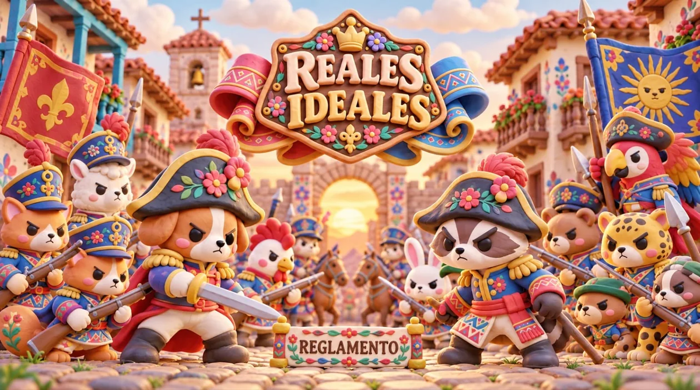

Idealistas
Realistas
Ronda 1 de 12Turno idealista
★ Rescate Cañón
Arrastra una ficha propia a un hexágono verde para mover o a un rival marcado para atacar. También puedes tocar una ficha y luego su destino.
Haz hasta dos acciones en tu turno, con un solo ataque y dos fichas distintas si mueves dos veces. El cañón puede atacar a distancia.
En batalla, defensor y atacante pueden revelar cartas por turnos. Si empatan, salen las dos fichas. Gana por eliminación o por conservar más fichas al final de la ronda 12.
Llega a una estrella enemiga para gastar un marcador y rescatar una ficha normal.
